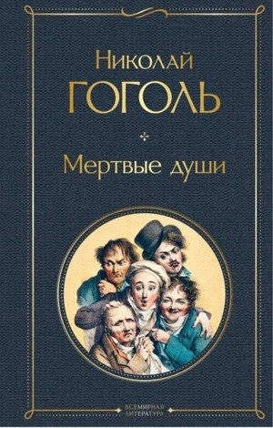

Мертвые души

"В "Мертвых душах" автор сделал такой великий шаг, что все, доселе им написанное, кажется слабым и бледным в сравнении с ними", - так писал Белинский о бессмертном творении Гоголя.
"Подаренный" Пушкиным сюжет давал основу для авантюрно-плутовского романа, но традиционный жанр не смог вместить в себя все богатство гоголевского замысла.
"Вся Русь явится в нем", - говорил Гоголь о своем будущем романе, позднее названном им поэмой. Такое определение прозаического произведения не случайно - столь поэтичен созданный писателем образ Руси, птицы-тройки.
"Русь, куда ж несешься ты? Дай ответ. Не дает ответа..."